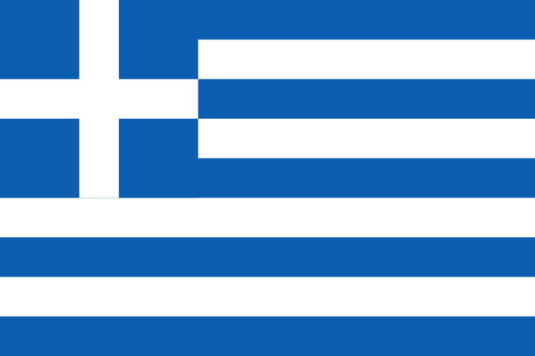

Länderakte Griechenland
Aussetzung – ausdrücklich keine Annullierung
Griechenland hat ein detailliert geregeltes, reziprokes Zentrumsmodell: Das 2001 unterzeichnete und 2005 ratifizierte Abkommen gibt beiden Zentren Rechtsfähigkeit und unterstellt sie dem Recht des Gaststaats. Nach dem russischen Angriff setzte das Kulturministerium die staatliche Kooperation aus – die Ministerin betonte im Parlament jedoch, es gehe um Aussetzung und nicht um Annullierung. Das Haus arbeitet 2026 weiter.
Aktiver offizieller Standort
Staatliche Kulturkooperation ausgesetzt
Kurzbefund
| Einrichtung |
Russisches Zentrum für Wissenschaft und Kultur Athen (Russisches Haus) |
| Ort |
Tzavella 7, Athen |
| Abkommen |
Unterzeichnet am 6. Dezember 2001; reziprok mit dem Griechischen Kulturzentrum Moskau |
| Ratifikation |
Gesetz 3411/2005, veröffentlicht am 4. November 2005 im Regierungsblatt 275/A |
| Inkrafttreten |
Offen. Das Abkommen tritt nach seinem Artikel 16 erst mit Eingang der letzten schriftlichen Notifikation in Kraft; dieses Datum wurde nicht gefunden |
| Vertragsinhalt |
Rechtsfähigkeit beider Zentren, Unterstellung unter das Recht des Gaststaats, entgeltliche nicht gewinnorientierte Leistungen, Personal, mögliche diplomatische Stellung von Leitungspersonal, Steuern und Räumlichkeiten |
| Eröffnung |
11. November 2005 |
| Maßnahme |
Aussetzung der staatlichen Kooperation mit russischen Kulturorganisationen ab 28. Februar 2022. Keine Schließung, keine nachweisbare Kündigung |
| Status Juli 2026 |
Präsenzbetrieb belegt. Am 15. und 18. Juli 2026 fanden im Haus staatliche Russisch-Zertifizierungsprüfungen statt |
Die Ministerin zog die Grenze selbst
Nach Berichten über ihre Antwort im Parlament erklärte Kulturministerin Lina Mendoni am 14. März 2022, erfasst seien russische Staatsorgane sowie vom russischen Staat finanzierte oder unterstützte Organisationen – und ausdrücklich: Aussetzung sei nicht Annullierung. Das Parlamentsprotokoll selbst wurde nicht gefunden; die Aussage stützt sich auf Sekundärberichte. Leseregel: „Offen“ bedeutet, dass eine Aussage in den geprüften öffentlichen Quellen nicht belegt ist. Das ist kein Beweis des Gegenteils. EU-Listung, nationaler Vollzug, politische Nichtkooperation, Vertragskündigung und tatsächliche Betriebsschließung werden getrennt bewertet.
Chronologie
30. Juni 1993 / Gesetz 2305/1995
Allgemeines griechisch-russisches Abkommen über kulturelle und wissenschaftliche Zusammenarbeit; ratifiziert durch Gesetz 2305/1995, Regierungsblatt 87/A vom 16. Mai 1995.
6. Dezember 2001
Unterzeichnung des Abkommens über das Griechische Kulturzentrum in Moskau und das Russische Zentrum für Wissenschaft und Kultur in Athen.
4. November 2005
Veröffentlichung des Ratifikationsgesetzes 3411/2005 im Regierungsblatt 275/A. Das Gesetz gilt nach seinem Artikel 2 ab Veröffentlichung. Das einbezogene Abkommen tritt nach seinem Artikel 16 jedoch erst mit Eingang der letzten schriftlichen Notifikation in Kraft – dieses Datum wurde nicht gefunden. Innerstaatliche Ratifikation und internationales Inkrafttreten sind deshalb getrennt zu betrachten.
11. November 2005
Eröffnung des Zentrums in Athen.
28. Februar 2022
Kulturministerin Lina Mendoni weist ihre Dienste nach zeitgenössischer Medienwiedergabe an, Durchführung, Zusammenarbeit, Planung und Erörterung von Veranstaltungen mit russischen Kulturorganisationen auszusetzen. Der ministerielle Originalakt wurde nicht gefunden.
14. März 2022
Mendoni erläutert laut Bericht über ihre parlamentarische Antwort, erfasst seien russische Staatsorgane sowie vom russischen Staat finanzierte oder unterstützte Organisationen; die Aussetzung sei nicht Annullierung.
6. April 2022
Griechenland erklärt zwölf russische Diplomaten und Konsularbeamte unter Berufung auf die Wiener Übereinkommen zu personae non gratae. Ein Hausbezug ist nicht belegt.
21. Juli 2022
Die EU listet Rossotrudnitschestwo. Eine zentrumsspezifische griechische Konten- oder Immobilienmaßnahme wurde nicht gefunden.
15. und 18. Juli 2026
Auf der Betreiberseite wird eine staatliche Russisch-Zertifizierungsprüfung ausdrücklich als im Russischen Haus in Athen durchgeführt dokumentiert; bereits am 15. Juli fand dort eine Onlineprüfung mit anwesendem Prüfungsbetrieb statt.
Rechtsgrundlage
Das Zentrumsabkommen vom 6. Dezember 2001 ist ungewöhnlich detailliert: Es gibt beiden Zentren Rechtsfähigkeit, unterstellt sie dem Recht des Gaststaats, erlaubt entgeltliche, nicht gewinnorientierte Leistungen und regelt Personal, Steuern und Räumlichkeiten.
Wichtig für die Statusfrage: Diplomatischer Status entsteht nicht automatisch für das ganze Haus, sondern allenfalls für akkreditiertes Leitungspersonal nach Artikel 10. Ob Direktor oder Stellvertretungen tatsächlich akkreditiert wurden, ist offen.
Die innerstaatliche Ratifikation durch Gesetz 3411/2005 ist belegt. Das internationale Inkrafttreten hängt nach Artikel 16 von der letzten schriftlichen Notifikation ab, deren Datum nicht gefunden wurde. Beides darf nicht gleichgesetzt werden.
Maßnahmen seit 2022
Das Kulturministerium setzte ab dem 28. Februar 2022 die staatliche Kooperation mit russischen Kulturorganisationen aus. Die Anweisung ist über zeitgenössische Medienwiedergabe belegt; der Originalakt wurde nicht gefunden.
Am 6. April 2022 erklärte Griechenland zwölf russische Diplomaten und Konsularbeamte zu personae non gratae. Eine Beteiligung von Hauspersonal an dieser Maßnahme ist nicht belegt.
Nicht gefunden wurden: eine Kündigung des Gesetzes oder Abkommens, eine Schließung des Zentrums sowie eine zentrumsspezifische Konten- oder Immobilienmaßnahme. Ob das Kulturministerium die 2022 verfügte Nichtkooperation später förmlich geändert oder aufgehoben hat, ist ebenfalls offen.
Einordnung
Eine belegte Zwischenstufe
Griechenland belegt eine Zwischenstufe, die in der deutschen Debatte oft fehlt: Die staatliche Kooperation wurde suspendiert, ohne dass eine Schließung des Zentrums oder eine Kündigung des Vertrags gefunden wurde. Die Ministerin hat diese Grenze selbst ausdrücklich benannt.
Für Deutschland sind vor allem die griechischen Regelungen über Gaststaatsrecht, vorherige Tätigkeitsinformation, Gebühren, Steuern und ordentliche Kündigung vergleichbar nützlich – sie zeigen, welche Klauseln ein Zentrumsabkommen überhaupt enthalten kann.
Bemerkenswert ist zudem die offene Inkrafttretensfrage: Ein Zentrum kann seit zwei Jahrzehnten arbeiten, ohne dass sich das internationale Inkrafttreten seines Statusvertrags öffentlich belegen lässt.
Quellen
Wo sich das Einzeldokument eindeutig belegen ließ, verweist der Link unmittelbar darauf – etwa auf Gesetzblätter, Vertragsveröffentlichungen und Parlamentsdokumente. Die Ausgangsakte dokumentiert für die übrigen Belege nur Herausgeber, Titel und Datum, nicht die vollständige Dokumentadresse; dort führt der Link auf die belegte Quelldomain. Diese Tiefenlinks sind ausdrücklich offen und werden nachgetragen, sobald die Fundstelle eindeutig ist.
-
Griechisches Gesetz 3411/2005 – Regierungsblatt 275/A vom 4. November 2005
Vollständiges Zentrumsabkommen; Normtext über privates Rechtsportal, amtliche Fundstelle verifiziert.
https://www.e-nomothesia.gr
-
Griechisches Nationaldruckamt – Suche im Regierungsblatt (FEK)
Amtliche Fundstellen der Gesetze 3411/2005 und 2305/1995.
https://et.gr
-
Griechisches Gesetz 2305/1995 – Regierungsblatt 87/A vom 16. Mai 1995
Allgemeines Kultur- und Wissenschaftsabkommen.
https://www.e-nomothesia.gr
-
Russisches Haus Athen – „Über uns“
Abgerufen am 14. August 2026; Eröffnung, Betreiberangaben, Vertragsbezug sowie Präsenz- und Distanzkurse. Eigenquelle.
https://greece.rs.gov.ru
-
Russisches Haus Athen – Startseite und Nachrichten
Abgerufen am 14. August 2026; Prüfungen im Haus am 15. und 18. Juli 2026. Eigenquelle, direkt für den Präsenzbetrieb.
https://greece.rs.gov.ru
-
Kathimerini – Anweisung des Kulturministeriums, 28. Februar 2022
Sekundärquelle; der ministerielle Originalakt wurde nicht gefunden.
https://www.kathimerini.gr
-
Athinorama – Bericht über Mendonis Antwort im Parlament, 14. März 2022
Abgrenzung „Aussetzung, nicht Annullierung“. Sekundärquelle; das Parlamentsprotokoll wurde nicht gefunden.
https://www.athinorama.gr
-
Anadolu Agency – Zwölf personae non gratae, 6. April 2022
Unter Bezug auf das griechische Außenministerium. Sekundärquelle zur Behördenentscheidung.
https://www.aa.com.tr
-
Kathimerini – Russische Reaktion auf die griechische Ausweisung, 6. April 2022
Ergänzende Medienquelle.
https://www.kathimerini.gr
-
Athens News – Ausstellung und Anschrift Tzavella 7, 26. Februar 2026
Sekundärquelle, direkt für eine aktuelle Präsenzveranstaltung.
https://www.athensnews.gr
-
Griechisches Kulturministerium
Geprüft auf eine förmliche Änderung oder Aufhebung der Nichtkooperation von 2022; nicht gefunden.
https://www.culture.gov.gr
-
EUR-Lex – Durchführungsverordnung (EU) 2022/1270
EU-Listung Rossotrudnitschestwos vom 21. Juli 2022.
https://eur-lex.europa.eu/eli/reg_impl/2022/1270/oj/deu
Offene Fragen
- Wurden Direktor oder Stellvertretungen nach Artikel 10 des Abkommens tatsächlich als Diplomaten akkreditiert?
- Welche gesonderten Dokumente nach Artikel 8 regeln Räume, Eigentum oder Miete und Kosten?
- Gab es nach der EU-Listung nationale Genehmigungen oder Blockierungen mit Bezug zum Haus?
- Hat das Kulturministerium die 2022 verfügte Nichtkooperation später förmlich geändert oder aufgehoben?
- Wann ging die letzte schriftliche Notifikation nach Artikel 16 ein – wann also trat das Abkommen international in Kraft?